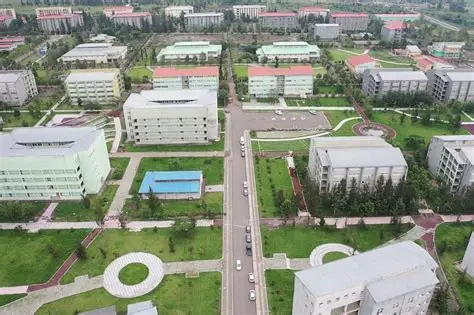
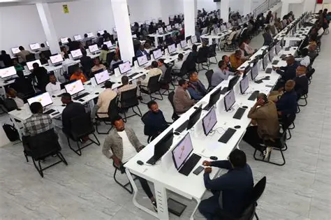
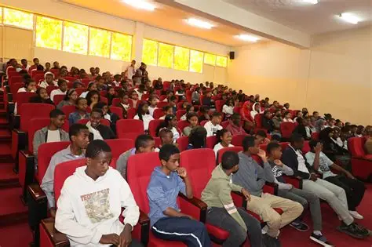
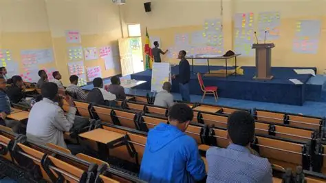
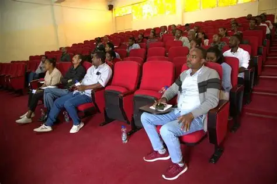

Computer laboratories
Workstations, projection and wired network access for practical sessions, programming labs, and software coursework.
University facility booking and scheduling.
Find a room, check when it is free, and send a booking request.
CampusReserve helps students and university staff find the right room, check when it is free, and send a booking request — whether you need a computer laboratory for a practical, a lecture hall for a class, or a study room for revision.

Spaces are grouped into four categories so you can compare options quickly.
Workstations, projection and wired network access for practical sessions, programming labs, and software coursework.
Seating for up to 120 with projection, amplification and hearing assistance, for scheduled classes and guest lectures.
Quiet rooms for individual or small-group revision, with a shared table, display and power sockets.
Rooms for society committees, staff meetings and advising sessions, with video conferencing for remote participants.
Compare location, capacity and equipment in the directory.
Look up the date and time slot you need.
Give your contact details, the times, and the purpose of the booking.
A facility manager would review your request and approve or decline it.
Photographs of teaching and meeting spaces.



